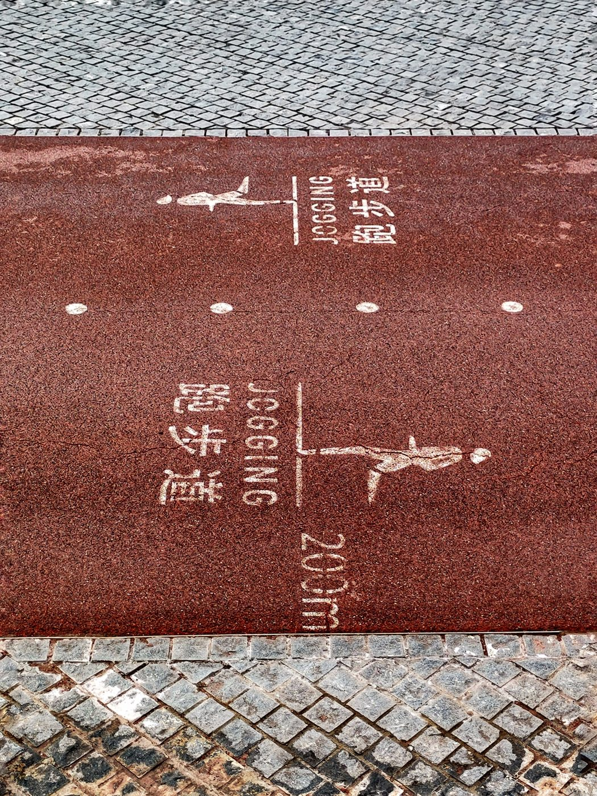
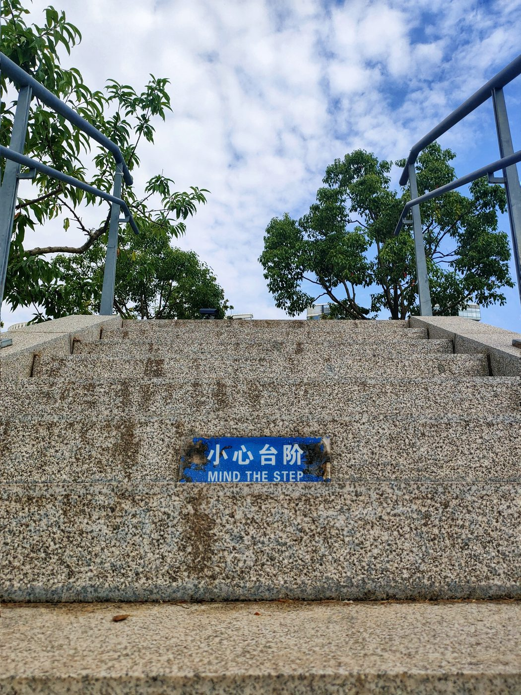
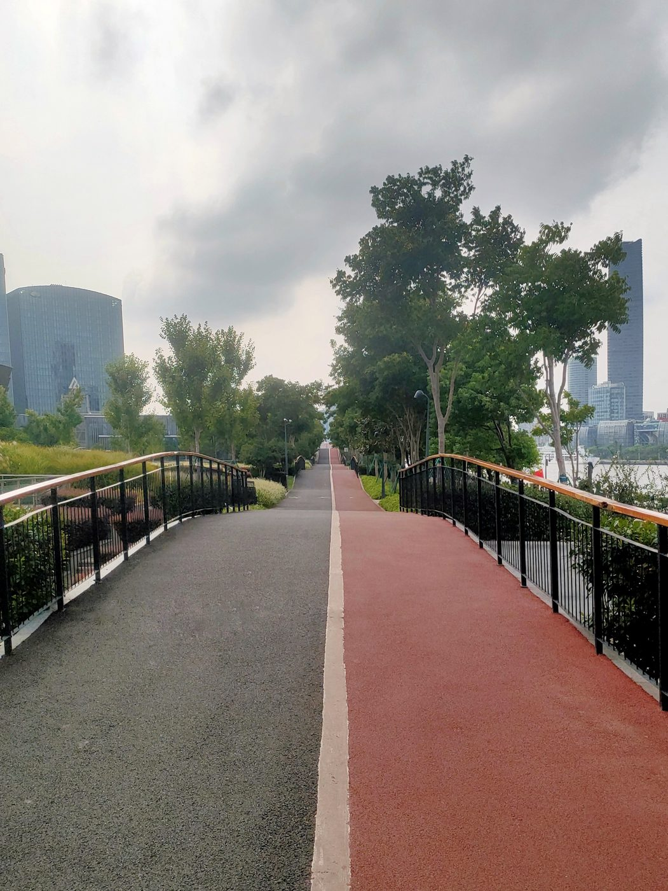
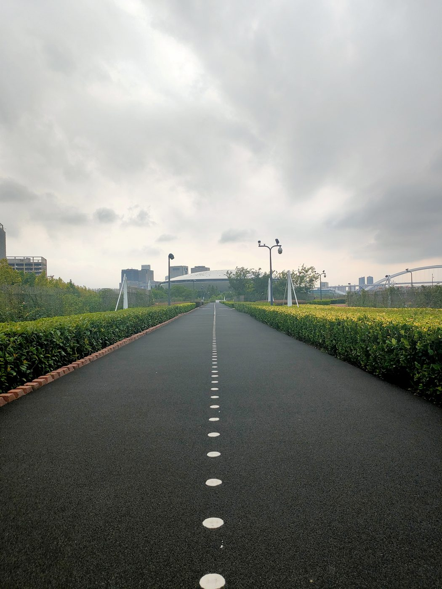

江边的跑道
2022 年 3 月 — 8 月

PHOTOGRAPHS · 2022
2022 年 3 月 — 8 月
PHOTOGRAPHS · 2022
照片 二〇二二
2022 年 3 月 — 8 月 · 7 张
PHOTOGRAPHS
六月




照片 二〇二二 · 2022 年 3 月 — 8 月
共 7 张照片，按拍摄时间排列。网页使用压缩副本，原始文件保存在 photo/2022/ 内，没有改动。
PHOTOGRAPHS · 2022